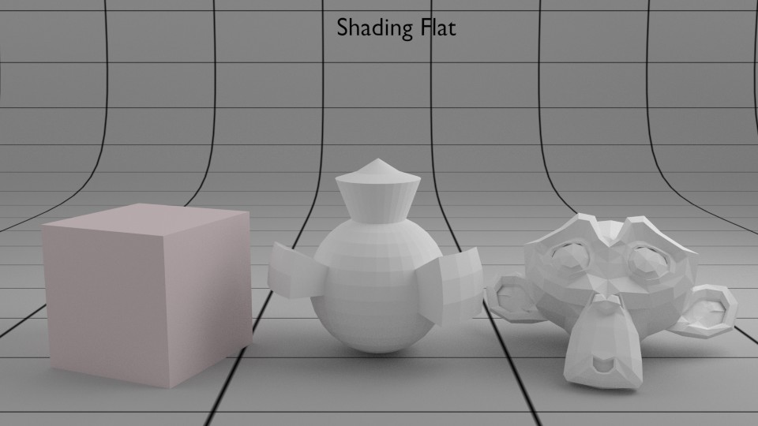
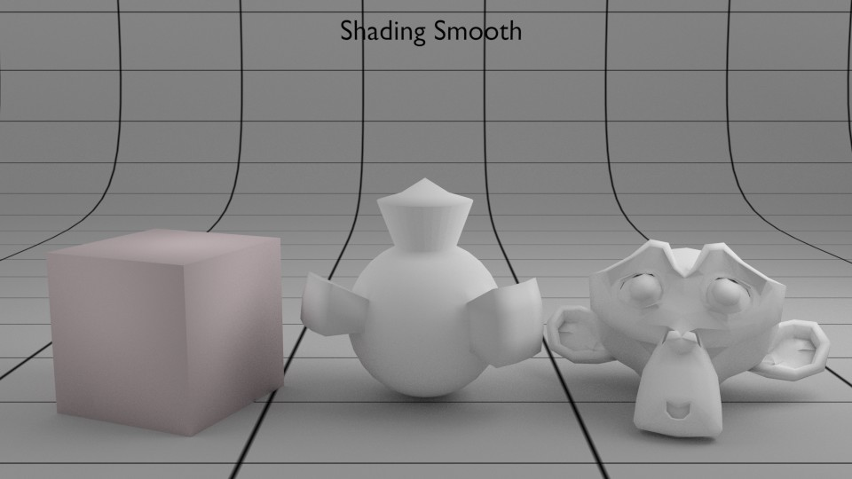
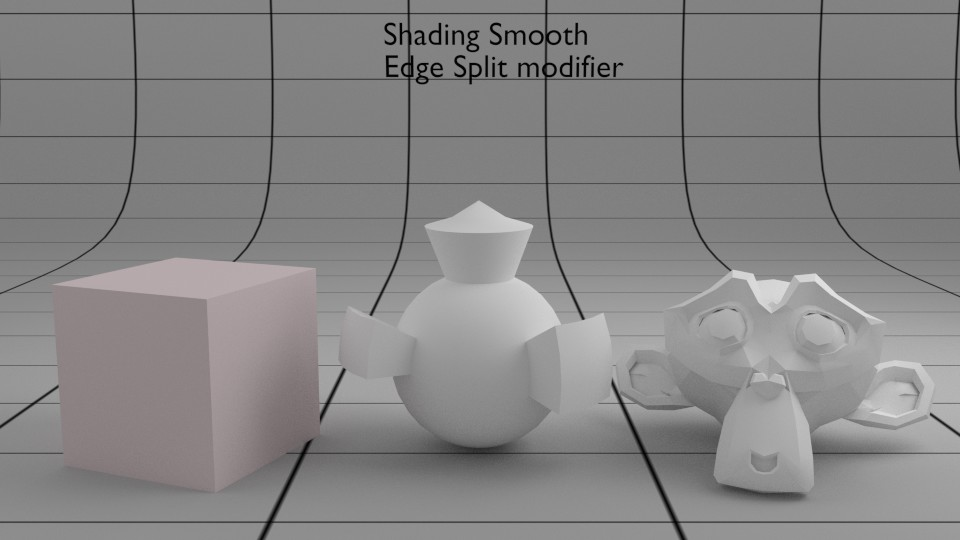
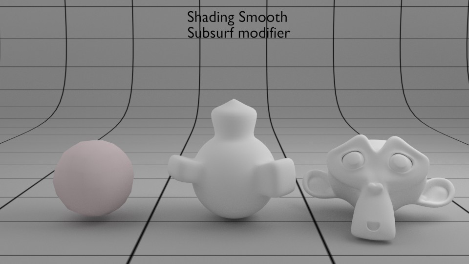
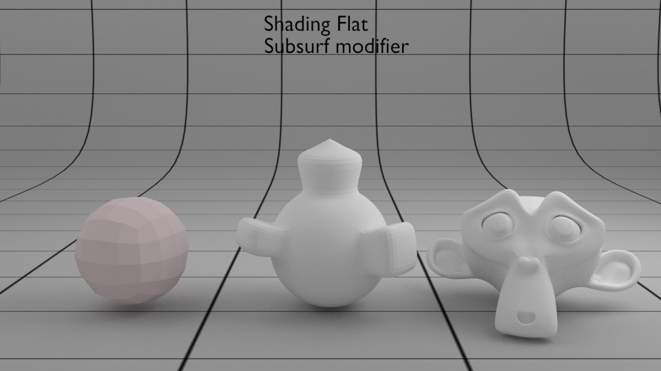
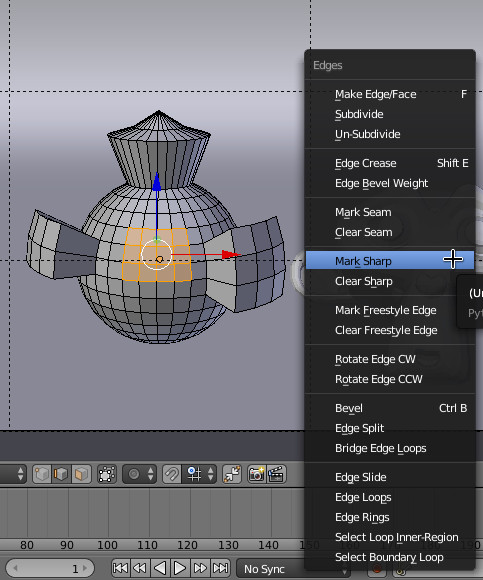
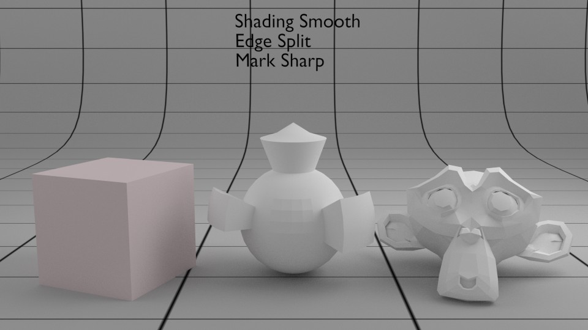
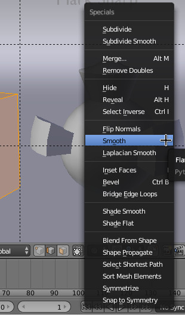
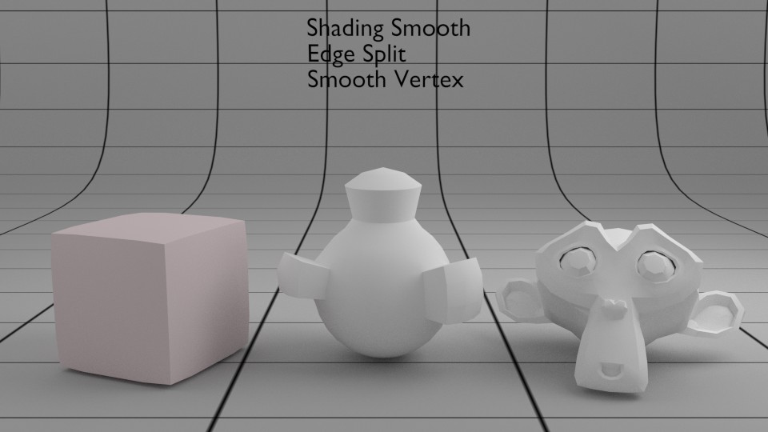

Manipular o aspeto Smooth/Flat dos modelos
Shading Smooth/Flat
Na modelação poligonal, os objetos são construídos através de faces planas. O shading flat é o aspeto inicial.
Pode utilizar as ferramentas Smooth/Flat em Object Mode (esquerda) e Edit Mode (direita), presentes na barra de ferramentas (T), para alterar o aspeto como estas faces são renderizadas. Pode aplicar à totalidade do objeto (clique em Smooth em Object Mode) ou apenas a algumas faces (em Edit Mode, selecione as faces/edges/vértices e pressione o correspondente Smooth). Na realidade, a geometria do objeto não sofre qualquer alteração. As faces irão sofrer uma alteração, uma tentativa de arredondamento ou suavização, e os reflexos da luz irão ser diferentes.

Em baixo, foi aplicado o Smooth em Object Mode a cada um dos objetos.
Como é visível, nem sempre o resultado é o desejável...
O problema está relacionado com a quantidade de geometria existente no objeto e com os ângulos de algumas arestas.
O modifier Edge Split é uma solução pois permite controlar a partir de que ângulo é aplicado o Smooth. É muito comum a sua utilização em combinação com o Smooth.
Outra solução é utilizar o modifier Subdivision Surface (subsurf). Este modifier irá subdivivir e suavizar cada uma das faces. A geometria irá alterar-se e aumentar (passa a ter mais vértices/arestas/faces).
É claro que pode usar o modifier Subdivision Surface e não utilizar o Smooth Shading, Neste caso, repare que a geometria altera-se mas as faces continuam planas.
Mark Sharp
A opção Mark Sharp, disponível no menu Edges (Ctrl+E), permite excluir arestas do efeito Smooth. Esta opção não afeta a geometria.
Repare no centro do objeto presente no meio.
Suavizar a geometria
Existem duas opções principais, ambas disponíveis no menu Specials (W).
O Smooth identificado abaixo (Vertex Smooth) irá tentar alisar os ângulos dos vértices selecionados.
A opção Subdivide Smooth irá subdividir as arestas selecionadas e arrendondar as mesmas.
Em ambos os casos, a geometria é afetada.
 